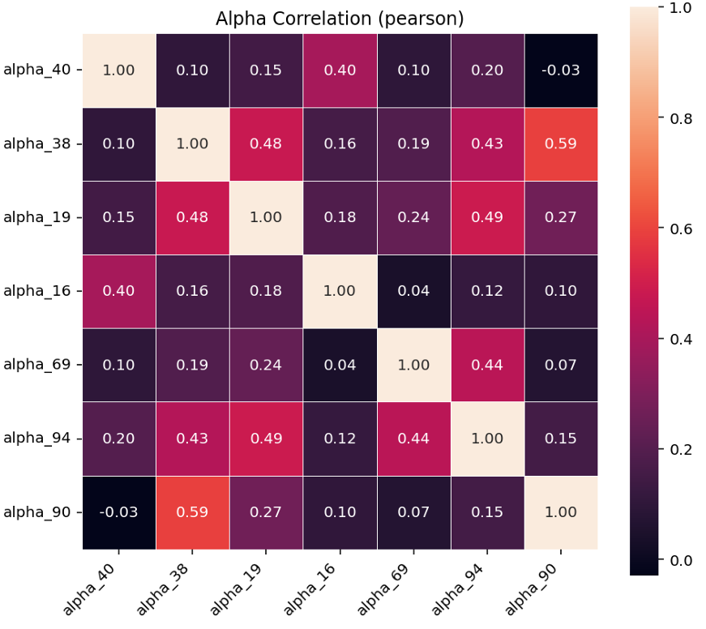

Systematic Equity Alpha Research Pipeline
Factor construction, IC/t-stat screening, attribution diagnostics, and reporting designed for repeatable deployment.
IC / t-stat
Validation
Attribution
Reporting
